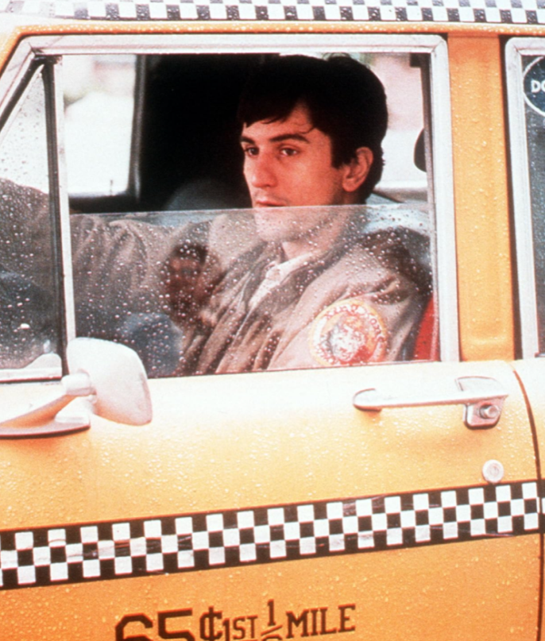
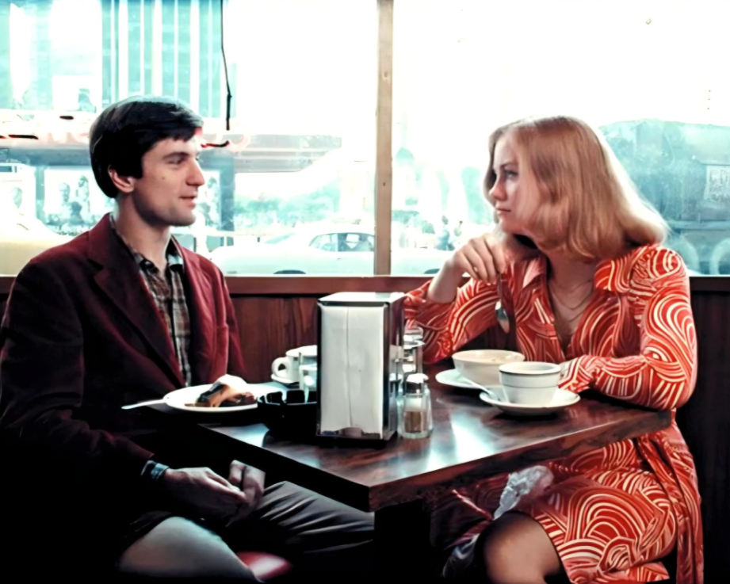
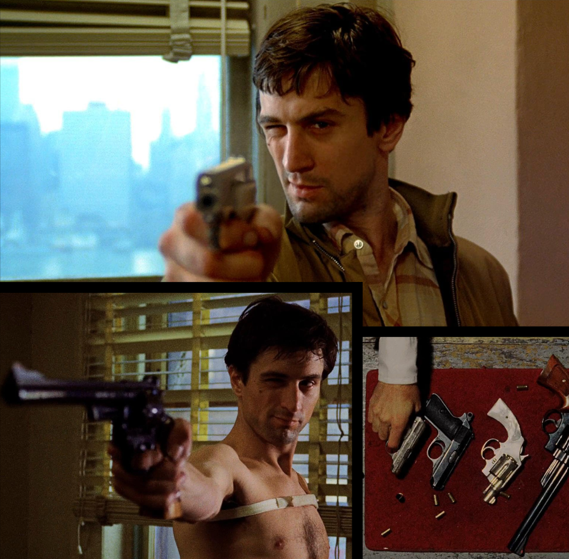
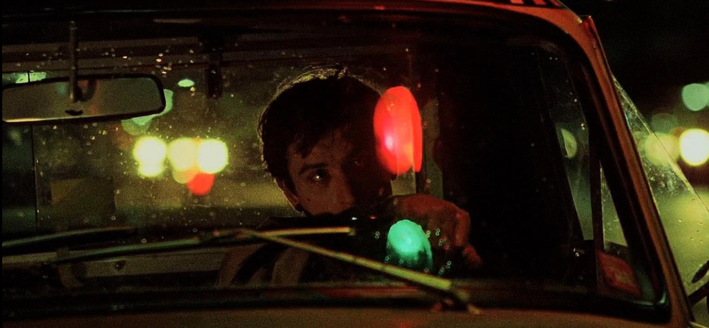
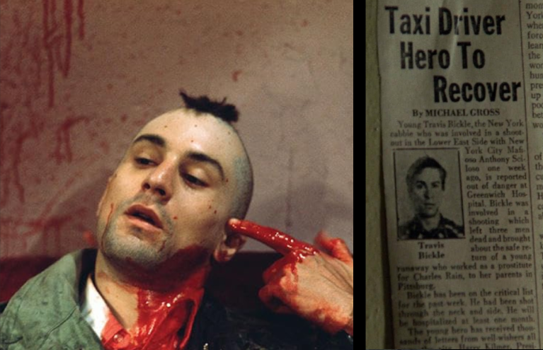
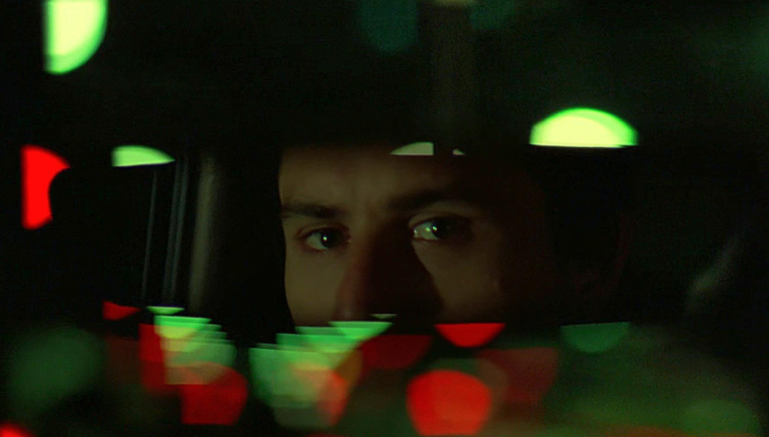

La pelicula de Scorsese (1976, guion de Paul Schrader) sigue a Travis Bickle, un veterano que trabaja como taxista nocturno en una Nueva York sucia y deteriorada. Mas que una historia de crimen, es el retrato de una mente que se va desconectando del mundo.

Travis esta rodeado de gente, pero no logra conectar con nadie. Pasa las noches manejando entre multitudes, con la ciudad iluminada de neon al otro lado del vidrio. El taxi funciona como una burbuja: lo pone en medio de todo y lo mantiene aparte. Sus dias son rutinas vacias, como ir a cines porno, comer solo y escribir en su diario. Su insomnio cronico borra el limite entre el dia y la noche, y con el cualquier ritmo de vida normal.
Los intentos de acercarse a otros fracasan por torpeza social, no por maldad. Lleva a Betsy a ver una pelicula porno en la primera cita sin entender por que ella se ofende. Esa incapacidad de leer los codigos de los demas lo deja cada vez mas encerrado en si mismo. La pelicula no ofrece la soledad como algo romantico: muestra como se pudre.
Travis necesita sentir que su vida importa. Lo dice casi desde el principio: quiere trabajar a cualquier hora, en cualquier lugar. Es un hombre con muchisima energia y sin destino, y esa falta de direccion lo lleva a buscar un sentido en cualquier causa que se le cruce.
Primero lo intenta con el amor, con Betsy, a quien idealiza como algo puro en medio de la suciedad. Cuando ella lo rechaza, su necesidad de significado busca otro cauce. Entonces aparece la politica, con el candidato Palantine, y despues la idea de que alguien tiene que limpiar la ciudad. Lo inquietante es que el proposito de Travis no nace de convicciones sino de un vacio. Se aferra a lo que tenga a mano, y por eso es tan peligroso: su causa podria haber sido cualquier otra.


Con el rechazo de Betsy, Travis se vuelve hacia el odio y la preparacion. Compra armas, entrena su cuerpo, se corta el pelo en una cresta mohicana. Cada paso lo acerca a verse como un justiciero con una mision, aunque la pelicula deja claro que se esta fabricando una identidad para escapar de su insignificancia.
Su obsesion con rescatar a Iris, la adolescente prostituida, es la excusa perfecta. Le da un objetivo noble a una necesidad de violencia que ya existia. La masacre del final es brutal y a la vez ambigua: Travis no actua tanto por ella como por el, para volverse alguien. Schrader y Scorsese insisten en esa distancia entre el heroe que Travis cree ser y lo que realmente hace.
Nueva York no es solo el escenario: es la mirada de Travis hecha paisaje. Las calles mojadas, el vapor que sale de las alcantarillas y las luces rojas muestran una ciudad que el percibe como una podredumbre moral. La pelicula nunca deja del todo claro cuanto de esa decadencia es real y cuanto es una proyeccion suya. Esa duda es parte de su fuerza.


Despues de la masacre, Travis es tratado como un heroe por los medios y por los padres de Iris. Betsy incluso vuelve a subirse a su taxi. Pero el ultimo plano, con la mirada de Travis en el espejo retrovisor, sugiere inquietud mas que paz. Nada cambio en el: la misma tension que produjo la violencia sigue ahi, esperando. El final deja una pregunta incomoda sobre una sociedad capaz de convertir en heroe a alguien profundamente perturbado.
Los temas de la pelicula se conectan entre si: la soledad produce la necesidad de proposito, esa necesidad busca una causa y, al no encontrar una sana, se vuelca hacia la violencia. Por eso Taxi Driver sigue siendo tan vigente. No ofrece una explicacion facil ni un villano claro, sino una mirada incomoda sobre como el aislamiento extremo puede torcer a una persona.
